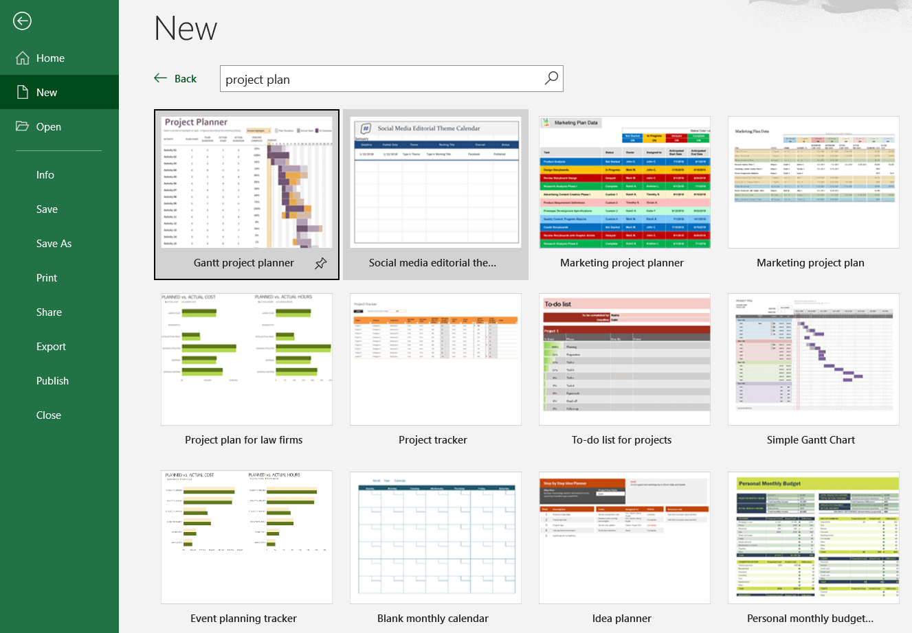
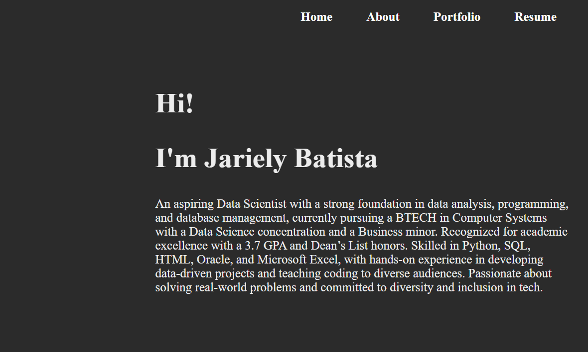
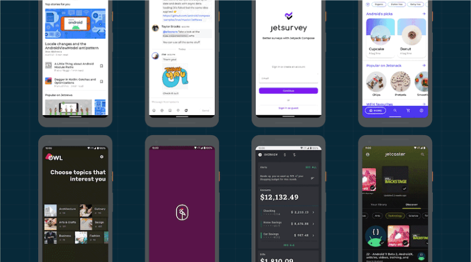
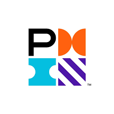
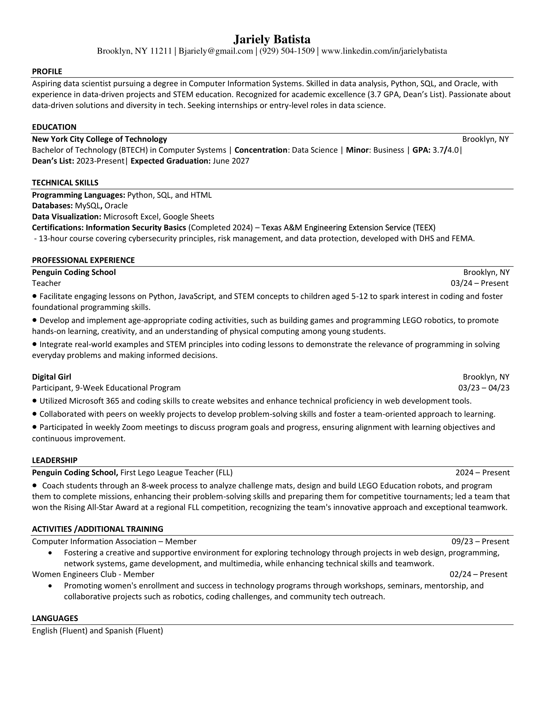

Aspiring Project Manager pursuing a Bachelor of Technology (BTECH) in Computer Systems with a minor in Business at New York City College of Technology. Recognized for academic excellence with a 3.7 GPA and Dean’s List honors. Skilled in scheduling, coordination, and team communication, with hands-on experience managing operations, facilitating STEM programs, and leading cross-functional projects. Proficient in tools such as Microsoft Office Suite, Google Workspace, Asana, Trello, and Visio, with a strong understanding of SDLC, process improvement, and project documentation. Experienced in applying project management principles through professional simulations and certifications, including the CBRE Project Management Job Simulation and Predictive Project Management training from the Project Management Institute. As a first-generation American and a member of the Hispanic community, I bring a unique perspective and a commitment to collaboration, inclusion, and continuous improvement. Passionate about organization, leadership, and driving successful outcomes through efficient planning and communication, I’m eager to contribute to dynamic teams in project coordination or entry-level project management roles.



Issued by: CBRE
Issued: Nov 2025
Completed CBRE’s Project Management Job Simulation through Forage, gaining practical experience in creating Gantt charts, managing project documentation, tracking budgets, prioritizing tasks, and supporting efficient project workflows.
View Credential
Issued by: Project Management Institute
Issued: April 2025
Completed PMI’s Fundamentals of Predictive Project Management, gaining hands-on experience with traditional project planning methods, including scheduling, task delegation, risk mitigation, and progress tracking.
View CredentialIssued by: Texas A&M Engineering Extension Service (TEEX)
Issued: March 2024
Credential ID: 500132
This 13-hour online certification course, developed with DHS and FEMA, provided a foundation in cybersecurity principles, risk management, and data protection best practices.
View Certificate PDF